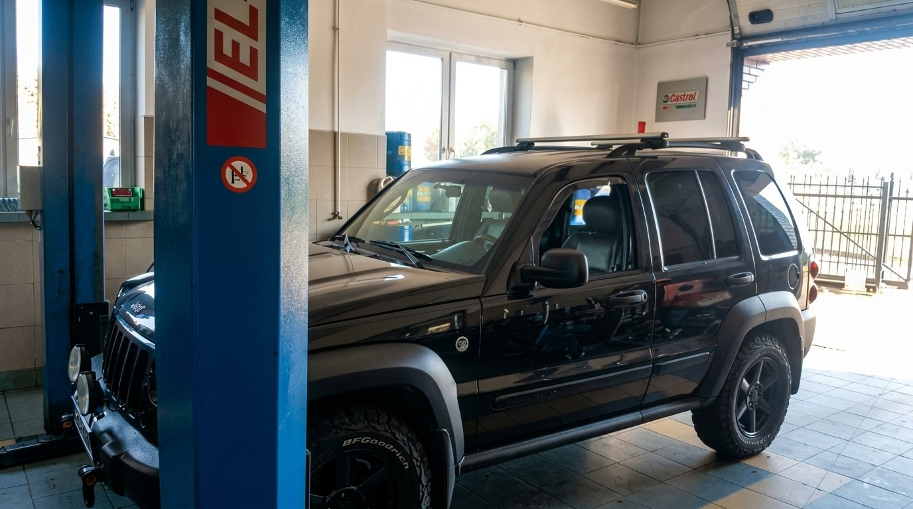

Specjalistyczny serwis automatycznych skrzyń biegów
Zakład Mechaniki Pojazdowej Tadeusz Sielawa w Białymstoku zajmuje się kompleksową naprawą automatycznych skrzyń biegów (DSG, tiptronic, S-tronic, MPS6 i inne), wymianą sprzęgieł suchych i mokrych oraz profesjonalną dynamiczną wymianą oleju ATF.

Dynamiczna wymiana oleju usuwa zanieczyszczenia i pozwala wymienić 100% płynu w układzie ASB.
O naszym warsztacie
Nasz zakład mieści się w Białymstoku przy ul. Tęczowej 2. Łączymy wieloletnie doświadczenie w mechanice pojazdowej z nowoczesnym zapleczem warsztatowym, dzięki czemu precyzyjnie diagnozujemy i naprawiamy zarówno zaawansowane przekładnie automatyczne, jak i podzespoły mechaniczne samochodów osobowych i terenowych.

Siedziba przy ul. Tęczowej 2
Wieloletnie doświadczenie oraz profesjonalna obsługa w zakresie wymiany płynów ATF i napraw przekładni.

Wyposażona hala serwisowa
Stanowiska z podnośnikami do obsługi aut osobowych, SUV oraz samochodów z napędem 4x4.

Bezpieczny, ogrodzony plac
Wygodny dojazd i przestronny parking dla samochodów oczekujących na serwis lub odbiór.
Dlaczego warto nam zaufać?
- Specjalizacja w przekładniach automatycznych: Skuteczna naprawa skrzyń DSG, S-tronic, tiptronic, MPS6 oraz wymiana sprzęgieł suchych i mokrych.
- Dynamiczna wymiana oleju: Procedura pozwalająca wymienić cały olej w skrzyni automatycznej oraz wypłukać nagromadzone zanieczyszczenia.
- Kompleksowa mechanika pojazdowa: Na miejscu wykonasz również wymianę rozrządu, sprzęgła, naprawę hamulców, zawieszenia i skrzyń manualnych.